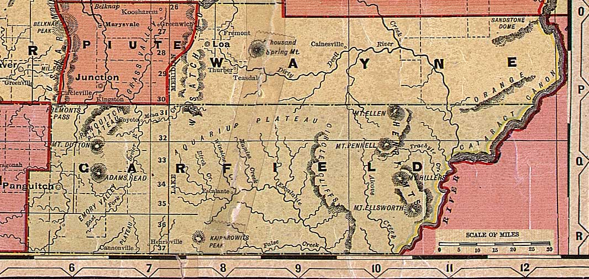

Piute, Wayne and Garfield Counties, Utah, ca. 1908
From "Deseret Evening News New Home Library Wall Chart" (reprinted with permission)
Sevier County
Emery County
All of Utah
Beaver
County
Iron
County

San Juan County
Kane County